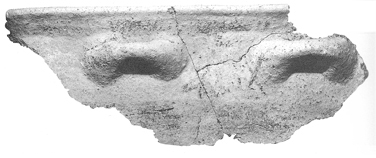
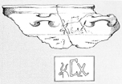

-
ARKHZc8
Names
ARKHZc8, ARKHZb<10>, ARKHZb10, ARKH Zc8
Support
Inked inscription
Location
Arkhalkhori
Findspot
Unavailable


Scribe
Unavailable
Context
Middle Minoan IA
1900-1850 BCE
Dimensions
Catalogue
Hiraklion Museum
Readings
1 1 0 *306 none
1 1 0 TA none
1 1 0 JE none
𐙚𐘳𐘧
*306TAJE
𐙚𐘳𐘧
*306TAJE
ARKH Zc 8
(HM 21.172; Sakellarakis 1975; Sakellarakis &
Sakellarakis 1997, I: 332, fig. 295), painted larnax rim from "the
upper burial level of Tholos Tomb E," EM II-MM IA context (in
Sakellarakis 1975), Protopalatial (in Sakellarakis & Sakellarakis 1997,
332).
*
306
-TA-JE
In
the illustration in 1997, fig. on p. 332, the first sign
looks like a pictogram of
a bull-head with double horns; the authors suggest *306. See *306-TA-JA, HT 115b.3.
Commentary © John Younger
References